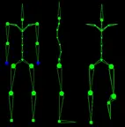
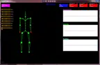
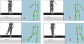
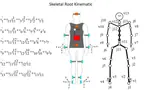
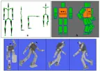
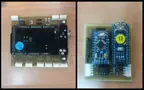
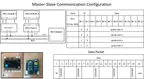
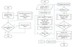
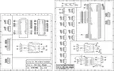

Project notes
Wearable motion capture
A modular sensing system for reconstructing human movement.
- Discipline
- Robotics
- Context
- Master Thesis
- Support
- MRL-Taiwan Company

Skeletal

















9 images · Select a thumbnail to explore. Original project photographs and illustrations.
The work
I developed a wearable motion capture system using inertial measurement units. Each module combined accelerometer, gyroscope, and magnetometer data to estimate orientation, with a quaternion-based approach for reconstructing body movement.
Project contributions & outcomes
- Designed a modular sensing architecture and skeletal reconstruction workflow.
- Evaluated complementary, gradient-descent, and Mahony filtering approaches.
- Investigated parallel communication between modules and RS485 communication with the host to address latency.
Tools & focus
IMUSensor fusionQuaternionsEmbedded systems